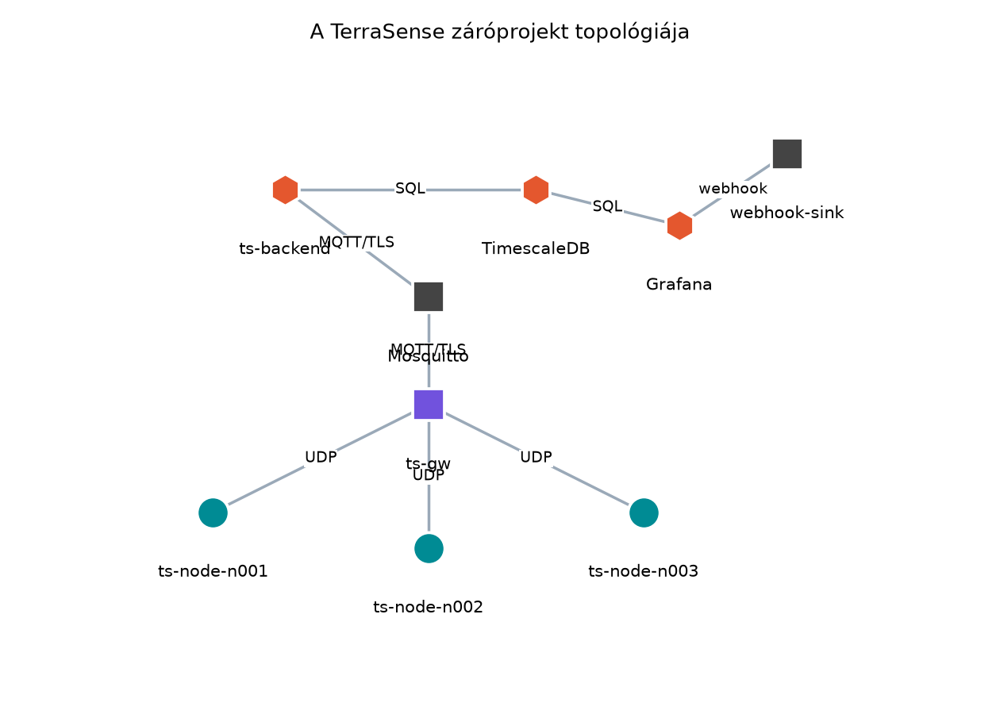
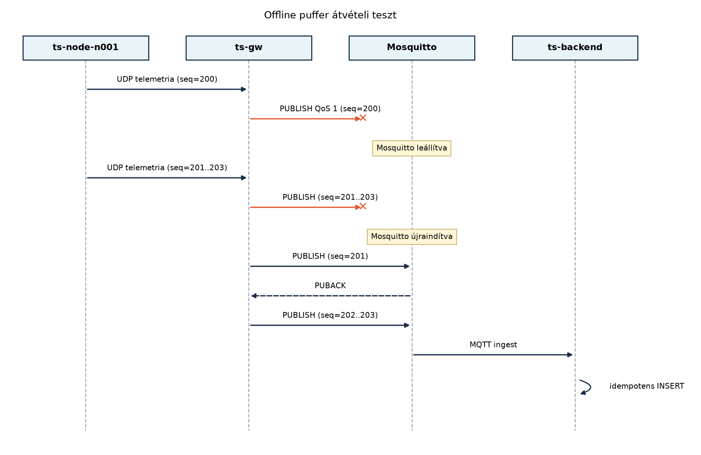

A TerraSense egyes rétegei a korábbi laborokban külön-külön már
működtek, de a rendszer akkor válik ténylegesen tesztelhetővé, ha minden
komponens egyszerre, egyetlen hálózatban fut. Ebben a záróprojektben a
cél nem új funkció fejlesztése, hanem az integráció: több szimulált
ts-node, a ts-gw, a TLS-es Mosquitto, a
ts-backend, a TimescaleDB és a Grafana összeállítása
egyetlen Compose-környezetben, majd annak bizonyítása, hogy a korábban
rögzített követelmények a teljes adatúton teljesülnek.
A laborok során a komponensek gyakran elszigetelten futottak: a
firmware-t native_sim alatt, a backendet tesztprofillal, a
brokert pedig ideiglenes konfigurációval indítottuk el. A valós
IoT-projektekben a hibák jelentős része éppen az integrációs határokon
jelentkezik: rossz tanúsítványútvonal, eltérő topic-konvenció, nem
egyező séma, tűzfal által blokkolt kapcsolat vagy nem megfelelő
konténer-függőségi sorrend. A záróprojekt ezeket a kockázatokat átvételi
tesztekkel kezeli.
A TerraSense követelményeit a Nem funkcionális követelmények: energia, költség, élettartam, megbízhatóság, biztonság alfejezetben és a későbbi laborokban fokozatosan pontosítottuk. A záróprojektben ezekből egy minimális, de mérhető átvételi követelménykészletet használunk: a telemetria eljut az eszköztől az adatbázisig, a parancsok és az eszközárnyék működnek, a gateway offline pufferel és visszatölt, a biztonságos csatorna kötelező, a hiányzó adat pedig riasztást vált ki.
A követelmények nem egyformán igazolhatók a laborban. A telemetria adatút, a parancs-nyugta, az offline visszatöltés, az mTLS és a riasztási értesítés végponttól végpontig tesztelhető; a hétnapos pufferkapacitás, a 99,9%-os üzemi kézbesítés, a hardveres szelep-biztonsági zárás, az eszköz-X.509, az OTA-visszagördülés és a REST-jogosultság csak részben vagy egyáltalán nem. Ezeket a fejezet végén található követelmény-nyomonkövetési mátrix külön kezeli, és a záróprojekt nem tekinti automatikusan teljesítettnek őket.
Definíció. Az átvételi teszt (acceptance test) olyan fekete dobozos ellenőrzés, amely nem a fejlesztő feltételezéseit, hanem a megrendelői vagy rendszerkövetelményeket igazolja. Eredménye általában PASS vagy FAIL, és minden egyes átvételi teszthez egyértelműen hozzá kell rendelni legalább egy követelmény-azonosítót.
Definíció. A követelmény-nyomonkövetés (requirements traceability) az a táblázat vagy gráf, amely a követelményektől a tervdokumentumokon és a megvalósításon át a tesztekig mutatja a kapcsolatot. IoT-rendszereknél ez azért fontos, mert egy biztonsági vagy adatkezelési követelmény könnyen „elvész” a rétegek között.
Definíció. A Compose-profil olyan
jelölő, amellyel szolgáltatások egy csoportját csak akkor indítjuk el,
ha a profilt explicit módon bekapcsoljuk. Ezzel ugyanaz a
compose.yaml használható könnyű fejlesztői, teljes
integrációs vagy tesztelői módban.
Definíció. A tesztprofil olyan explicit, dokumentált konfiguráció, amely a laborban lerövidíti az éles küszöbértékeket (például a hiányzóadat-riasztás 10 perces ablaka helyett 60 másodpercet használ), miközben a termelési alapérték a konfigurációban megmarad. A tesztprofil nem azonos a Compose-profillal: utóbbi szolgáltatásokat kapcsol be, előbbi paramétereket ír felül. A záróprojektben a tesztprofil minden eltérése névvel és indoklással szerepel, hogy a laboreredmény ne legyen összetéveszthető a termelési beállítással.
A záróprojekt topológiája:

A szimulált ts-node konténerek a záróprojekt
végleges, integrált üzenetszerződését használják. Ez a
szerződés a Gateway szerepe: híd, puffer, biztonsági
határ alfejezetben bevezetett UDP/JSON átvitelre és az Adatformátumok: JSON, CBOR, Protocol Buffers, SenML
alfejezetben rögzített végleges telemetriasémára épül, de a
záróprojektben kiegészül a site és boot_id
mezővel, valamint a szelepállapotot hordozó actuators
objektummal:
{
"kind": "telemetry",
"schema_version": 1,
"site": "gh1",
"node_id": "n001",
"boot_id": "9f3c1a7b2e40",
"seq": 42,
"ts": 1730000000000,
"measurements": {
"temperature": {"value": 23.4, "unit": "Cel", "valid": true, "reason": null},
"humidity": {"value": 61.2, "unit": "%RH", "valid": true, "reason": null},
"soil_moisture": {"value": 34.0, "unit": "%", "valid": true, "reason": null}
},
"actuators": {"valve_open": false}
}A seq a (site, node_id, boot_id) hármason
belül monoton növekvő; újraindulás után a boot_id
megváltozik, ezért a seq újraindulhat. A ts az
esemény ideje UTC-ben, epoch milliszekundumban; a boot_id a
bootpillanatot azonosítja, és az idempotenciához is szükséges. A
measurements objektumtérkép a hivatalos séma; a korábbi
laborok sensor_data objektuma és a
T:23.4;RH:61.2;SM:34;seq:42 szöveges UDP-példája a
záróprojektben nem érvényes. A measurements minden eleme
value/unit/valid/reason
négyest hordoz; a valid=false eset a hibás vagy hiányzó
mérést jelöli, nem a mérés elhagyását. A ts-gw a
terrasense/<site>/<node>/telemetry topicra
publikál QoS 1 szinten, retain=false beállítással; a
state és a status topic retained, a
cmd és a cmd/result nem retained. A gateway a
terrasense/<site>/<node>/cmd topicra érkező
parancsot UDP-n továbbítja a node-nak, a node
terrasense/<site>/<node>/cmd/result topicra
küldött nyugtáját pedig a backendnek továbbítja. A boot_id
változásakor a gateway a (site, node_id) párhoz tartozó
last_seq ellenőrzést az új boot_id-hez
igazítja, különben egy újraindult node első üzenetét tévesen rendellenes
sorrendűnek minősítené.
A node a szelepállapot-változást külön state üzenetben
is elküldi:
{
"kind": "state",
"site": "gh1",
"node_id": "n001",
"boot_id": "9f3c1a7b2e40",
"seq": 42,
"ts": 1730000000000,
"valve_open": false
}A gateway ezt a terrasense/gh1/n001/state topicra
publikálja QoS 1 szinten, retain=true beállítással. A
state üzenet a seq-et is hordozza, hogy a
backend a telemetriával azonos módon tudja deduplikálni és sorrendezni.
A status topic a jelenlétet hordozza
(online/offline), a Last Will pedig ugyanerre
a topicra kerül; a cmd és a cmd/result
retain értéke hamis, mert egy elavult parancs újraindítás
után nem hajtódhat végre.
A rendszerindítás a következő függőségi láncot követi:
schema/ init szkriptjeivel
inicializálja az adatbázist, és a Mosquitto elindul.ts-backend csak a TimescaleDB healthy
állapota után indul, a ts-gw pedig a Mosquitto után;
mindkettő újrapróbálkozik, ha a függősége még nem fogad
kapcsolatot.webhook-sink fogadja.A schema/ init szkriptjei csak üres
adatköteten futnak le. Ezért az első indítás előtt, illetve a
séma módosítása után docker compose down -v szükséges; a
-v törli a timescale-data, a
gw-store és az alert-log köteteket is. A
laborban ez elfogadható, mert a cél a reprodukálható kiinduló állapot,
nem az adatmegőrzés.
A záróprojektben három döntést érdemes tudatosan meghozni: mit mérjünk a teljes rendszeren, milyen tesztelési mélységet válasszunk, és hogyan kezeljük a szimulált node-ok számát.
| Döntés | Lehetőség | Előny | Hátrány | Választás a záróprojektben |
|---|---|---|---|---|
| Node-ok indítása | egy folyamat több node-dal | egyszerűbb erőforrás-gazdálkodás | nehezebb hibát izolálni | három külön konténer |
| TLS-teszt | csak konfiguráció ellenőrzése | gyors | nem bizonyítja a lezárt portot és az ACL-t | pozitív és negatív kapcsolódási kísérlet |
| Offline teszt | broker leállítása hosszú időre | valószerű | lassú | 35 másodperces leállás, seq-folytonosság
ellenőrzésével |
| Mérés | pontos idők naplózása | reprodukálható | több műszerezést igényel | SQL-alapú esemény- és késleltetésmérés (server_ts,
seq) |
| Hiányzóadat-teszt | a 10 perces termelési küszöb kivárása | valósághű | lassú | 60 s-es tesztprofil, a termelési érték dokumentálva |
A Compose-profilokat itt csak jelöljük, mert a záróprojektben az
összes szolgáltatás egy profilba kerül. Hasznos lehet azonban külön
profilt felvenni a node-szimulátorokra (sim) és a
megjelenítő rétegre (ui), hogy a backend-fejlesztés során
ne induljon el minden feleslegesen. A teljes záróprojekt az
alapértelmezett profillal indul.
A legtanulságosabb átvételi teszt a ts-gw offline
működését ellenőrzi. A Store-and-forward: offline
működés és visszatöltés alfejezetben elkészített SQLite-puffernek a
teljes rendszerben is meg kell őriznie az üzeneteket, ha a broker
átmenetileg nem elérhető. A forgatókönyv:

Az első PUBLISH azért vész el, mert a brokert a küldés
előtt leállítjuk. A ts-gw a Paho kliens hibajelzése után
nem törli a rekordot az SQLite-pufferből, hanem újrapróbálkozik. A
node-ok eközben továbbra is 10 másodpercenként küldenek UDP-csomagot,
így a 35 másodperces leállás alatt három új rekord kerül a pufferbe.
Amikor a Mosquitto újraindul, a ts-gw a pufferből
seq szerint visszatölt, és minden sikeres
PUBACK után törli az adott rekordot. A backend idempotens
ingestje a
(site, node_id, boot_id, seq, measurement_type, ts) kulcsot
használja, így az újraküldött üzenetek nem okoznak duplikátumot: egy
eseményhez három mérési sor tartozik, és a visszatöltés után is három
marad, nem hat. A boot_id azért része a kulcsnak, mert a
node újraindulása után a seq nulláról indulhat; a
site pedig azért, mert két telephely ugyanazt a rövid
n001 node-nevet használhatja.
Munkakönyvtár:
mkdir -p ~/iot-labor/i066 && cd ~/iot-labor/i066A labor előfeltétele a korábbi laborkimenetek megléte. A záróprojekt
nem közvetlenül a korábbi laborok részleges könyvtáraiból buildel, mert
azok oktatási állapotot tartalmaznak; helyette egy külön, végleges
integrációs projektet állít össze. A ~/iot-labor/i066/
fa:
~/iot-labor/i066/
├── ts-backend/ # i043 váza + i044 ingest + i045 séma + i049 parancs + i050 árnyék + i061 flotta
├── ts-gw/ # i038 Dockerfile és gateway + i037 store-and-forward + i057 TLS
├── schema/ # 001_telemetry.sql, 002_fleet.sql, 003_command.sql, 004_alert.sql, 005_seed.sql
├── grafana-provisioning/
│ ├── datasources/datasources.yml
│ ├── dashboards/dashboards.yml
│ ├── dashboards/dashboard.json
│ └── alerting/terrasense-alerts.yml
├── mosquitto/ # mosquitto.conf, acl.conf
├── certs/ # lab-ca.crt, ts-gw.crt/key, ts-backend.crt/key, mosquitto.crt/key
├── ts_node_sim.py
├── webhook_sink.py
└── acceptance_test.shAz összeállítás forrásai:
| Cél | Forrás | Megjegyzés |
|---|---|---|
| Spring Boot váz, REST, Dockerfile | ~/iot-labor/i043/ |
a 14.3 projekt közvetlenül az i043 gyökere, nem
i043/ts-backend |
| MQTT ingest és idempotencia | ~/iot-labor/i044/ts-backend/ |
a végleges kulcsot a záróprojekt egészíti ki site és
boot_id mezővel |
| telemetria tábla, normalizálás | ~/iot-labor/i045/ |
server_ts és hosszú tábla; a végleges egyedi kulcs a
site/boot_id mezőt is tartalmazza |
| parancsmodell | ~/iot-labor/i049/ |
DeviceCommand, valve.open,
duration_ms, status nyugta; a végleges
változat a device_command táblát használja |
| eszközárnyék | ~/iot-labor/i050/ |
a laborban memóriabeli; a záróprojekt ezt a korlátot dokumentálja |
| flotta- és konfigurációs táblák | ~/iot-labor/i061/schema.sql |
devices, device_config,
device_state, device_groups |
| gateway és Dockerfile | ~/iot-labor/i038/ts-gw/ |
TS_GW_* környezeti változók |
| store-and-forward | ~/iot-labor/i037/ts-gw/ |
spool tábla, /var/lib/ts-gw/spool.db; a
max_records korlát a végleges változatban kötelező |
| TLS/mTLS | ~/iot-labor/i057/ |
lab-ca.crt, ts-gw.crt,
ts-backend.crt, mosquitto.crt |
| Grafana | ~/iot-labor/i051/, ~/iot-labor/i052/ |
az adatforrás és a riasztás a végleges compose hostneveihez igazítva |
A végleges ts-backend nem memóriabeli megoldás: a
parancsokat a device_command táblában tartja, a flotta- és
konfigurációs adatokat a
devices/device_config/device_state
táblákból olvassa, a telemetriát pedig a végleges telemetry
táblába írja. Az eszközárnyék a laborban továbbra is memóriabeli
(ShadowService), ezért a záróprojekt átvételi mátrixa ezt
„részben igazolt” állapotként rögzíti. A ShadowService a
desired OPEN/CLOSED értéket a parancsszerződés
valve.open/valve.close típusára képezi le, a
delta alapján a cmd topicra publikál, a
reported értéket pedig a node state
üzeneteiből frissíti. Maga az árnyék állapota memóriabeli, ezért a
desired/reported pár a backend újraindításakor elveszik. A végleges
gateway az i038 Dockerfile-ját használja, kiegészítve a
spool könyvtár létrehozásával, a tsgw felhasználó
jogosultságával és a TLS környezeti változókkal.
A teljes compose.yaml a közös stack könyvtárba
kerül:
name: terrasense-lab
services:
mosquitto:
image: eclipse-mosquitto:2.0.18
ports:
- "8883:8883"
volumes:
- ../i066/mosquitto/mosquitto.conf:/mosquitto/config/mosquitto.conf:ro
- ../i066/mosquitto/acl.conf:/mosquitto/acl.conf:ro
- ../i066/certs:/mosquitto/certs:ro
command: ["mosquitto", "-c", "/mosquitto/config/mosquitto.conf"]
timescaledb:
image: timescale/timescaledb:2.17.2-pg16
environment:
POSTGRES_DB: terrasense
POSTGRES_USER: terrasense
POSTGRES_PASSWORD: lab_password
volumes:
- timescale-data:/var/lib/postgresql/data
- ../i066/schema:/docker-entrypoint-initdb.d:ro
healthcheck:
test: ["CMD-SHELL", "pg_isready -U terrasense -d terrasense"]
interval: 5s
timeout: 3s
retries: 12
ts-backend:
build: ../i066/ts-backend
depends_on:
mosquitto:
condition: service_started
timescaledb:
condition: service_healthy
ports:
- "127.0.0.1:8080:8080"
environment:
SPRING_DATASOURCE_URL: jdbc:postgresql://timescaledb:5432/terrasense
SPRING_DATASOURCE_USERNAME: terrasense
SPRING_DATASOURCE_PASSWORD: lab_password
MQTT_URI: ssl://mosquitto:8883
MQTT_CLIENT_ID: ts-backend
MQTT_CA_CERT: /certs/lab-ca.crt
MQTT_CLIENT_CERT: /certs/ts-backend.crt
MQTT_CLIENT_KEY: /certs/ts-backend.key
volumes:
- ../i066/certs:/certs:ro
ts-gw:
build: ../i066/ts-gw
depends_on:
mosquitto:
condition: service_started
environment:
TS_GW_MQTT_BROKER: mosquitto
TS_GW_MQTT_PORT: "8883"
TS_GW_MQTT_TLS: "true"
TS_GW_TLS_CA: /certs/lab-ca.crt
TS_GW_TLS_CERT: /certs/ts-gw.crt
TS_GW_TLS_KEY: /certs/ts-gw.key
TS_GW_CLIENT_ID: ts-gw
TS_GW_UDP_PORT: "9000"
TS_GW_SPOOL_MAX_RECORDS: "181440"
TS_GW_LOG_LEVEL: info
volumes:
- ../i066/certs:/certs:ro
- gw-store:/var/lib/ts-gw
ports:
- "9000:9000/udp"
ts-node-n001:
image: python:3.12-slim
depends_on:
- ts-gw
environment:
SITE: gh1
NODE_ID: n001
GW_HOST: ts-gw
GW_PORT: "9000"
LISTEN_PORT: "9000"
MAX_VALVE_OPEN_S: "60"
volumes:
- ../i066/ts_node_sim.py:/app/ts_node_sim.py:ro
command: ["python", "/app/ts_node_sim.py"]
restart: unless-stopped
ts-node-n002:
image: python:3.12-slim
depends_on:
- ts-gw
environment:
SITE: gh1
NODE_ID: n002
GW_HOST: ts-gw
GW_PORT: "9000"
LISTEN_PORT: "9000"
MAX_VALVE_OPEN_S: "60"
volumes:
- ../i066/ts_node_sim.py:/app/ts_node_sim.py:ro
command: ["python", "/app/ts_node_sim.py"]
restart: unless-stopped
ts-node-n003:
image: python:3.12-slim
depends_on:
- ts-gw
environment:
SITE: gh1
NODE_ID: n003
GW_HOST: ts-gw
GW_PORT: "9000"
LISTEN_PORT: "9000"
MAX_VALVE_OPEN_S: "60"
volumes:
- ../i066/ts_node_sim.py:/app/ts_node_sim.py:ro
command: ["python", "/app/ts_node_sim.py"]
restart: unless-stopped
grafana:
image: grafana/grafana:11.2.0
depends_on:
timescaledb:
condition: service_healthy
ports:
- "3000:3000"
environment:
GF_SECURITY_ADMIN_PASSWORD: lab_admin
GF_AUTH_ANONYMOUS_ENABLED: "false"
volumes:
- ../i066/grafana-provisioning/datasources:/etc/grafana/provisioning/datasources:ro
- ../i066/grafana-provisioning/dashboards:/etc/grafana/provisioning/dashboards:ro
- ../i066/grafana-provisioning/alerting:/etc/grafana/provisioning/alerting:ro
webhook-sink:
image: python:3.12-slim
command: ["python", "/app/webhook_sink.py"]
volumes:
- ../i066/webhook_sink.py:/app/webhook_sink.py:ro
- alert-log:/data
expose:
- "8081"
volumes:
timescale-data:
gw-store:
alert-log:A ts-node szolgáltatások Python-szimulátorok, amelyek a
Zephyr native_sim node helyét veszik át az integrációs
laborban; a valós firmware a Zephyr 3.7.0/SDK 0.16.8 verziómátrix
szerint épül. A szimulátor a végleges UDP- és MQTT-szerződést
gyakorolja, nem helyettesíti a hardveres időzítési és
energiaviselkedést. A ts-gw és a ts-backend a
../i066/... végleges integrációs könyvtárból buildel, nem a
korábbi laborok részleges könyvtáraiból.
A ~/iot-labor/i066/ts-gw/Dockerfile a 12.3 labor
Dockerfile-jára épül, de a store-and-forward réteghez szükséges
SQLite-ot és az írható spool könyvtárat is tartalmazza:
# Build stage
FROM ubuntu:24.04 AS build
RUN apt-get update && apt-get install -y --no-install-recommends \
g++ cmake pkg-config libpaho-mqtt-dev libsqlite3-dev libsystemd-dev \
&& rm -rf /var/lib/apt/lists/*
WORKDIR /src
COPY . .
RUN cmake -B build -DCMAKE_BUILD_TYPE=Release && cmake --build build -j"$(nproc)"
# Runtime stage
FROM ubuntu:24.04
RUN apt-get update && apt-get install -y --no-install-recommends \
libpaho-mqtt1.0 libsqlite3-0 sqlite3 libsystemd0 ca-certificates \
&& rm -rf /var/lib/apt/lists/*
RUN useradd --system --no-create-home --shell /usr/sbin/nologin tsgw \
&& install -d -o tsgw -g tsgw -m 0750 /var/lib/ts-gw
COPY --from=build /src/build/ts-gw /usr/local/bin/ts-gw
USER tsgw
ENTRYPOINT ["/usr/local/bin/ts-gw"]A tsgw felhasználó a /var/lib/ts-gw
könyvtár tulajdonosa, ezért az SQLite spool a gw-store
kötetben írható; a névvel ellátott kötet a konténer újraalkotása után is
megőrzi a puffer tartalmát. A végleges Config.cpp a
TS_GW_MQTT_TLS, TS_GW_TLS_CA,
TS_GW_TLS_CERT és TS_GW_TLS_KEY változókat
olvassa; ha a TLS be van kapcsolva, a kliens a három tanúsítvány nélkül
nem indul el. A spool felső korlátja a
TS_GW_SPOOL_MAX_RECORDS, túllépéskor a legrégebbi rekordok
törlődnek. Ellenőrzési igény. A Paho MQTT C++ és az
SQLite csomagok pontos neve Ubuntu 24.04-en ellenőrizendő; a laborban
apt-cache search paho és
apt-cache search sqlite3 ad felvilágosítást.
A tanúsítványok neve és a Mosquitto hosztneve a végleges compose-ban
eltér a 19.3 labor localhost-ra kiállított példányától. A
certs/ könyvtárban ezért a következő fájloknak kell
lenniük: lab-ca.crt, ts-gw.crt,
ts-gw.key, ts-backend.crt,
ts-backend.key, mosquitto.crt,
mosquitto.key. A Mosquitto szerver tanúsítványát a belső
hálózati névre is ki kell állítani, legalább a következő SAN-okkal:
DNS:mosquitto, DNS:localhost,
IP:127.0.0.1. A 19.3 labor CN=localhost,
SAN=DNS:localhost,IP:127.0.0.1 tanúsítványa a
ts-backend és a ts-gw
ssl://mosquitto:8883 kapcsolatához nem elegendő, mert a
hosztnév-ellenőrzés a mosquitto nevet keresi. Az ACL a
/mosquitto/acl.conf útvonalon van mountolva, a
require_certificate true és a
use_identity_as_username true beállítás mellett a
ts-gw és a ts-backend CN-je az
ACL-felhasználó.
A végleges mosquitto.conf:
per_listener_settings true
listener 8883
cafile /mosquitto/certs/lab-ca.crt
certfile /mosquitto/certs/mosquitto.crt
keyfile /mosquitto/certs/mosquitto.key
require_certificate true
use_identity_as_username true
acl_file /mosquitto/acl.confA végleges acl.conf a 19.3 labor ACL-jét egészíti ki a
gateway parancs-feliratkozásával és a cmd/result
publikálásával:
user ts-gw
topic write terrasense/+/+/telemetry
topic write terrasense/+/+/state
topic write terrasense/+/+/cmd/result
topic read terrasense/+/+/cmd
user ts-backend
topic read terrasense/+/+/telemetry
topic read terrasense/+/+/state
topic write terrasense/+/+/cmd
topic read terrasense/+/+/cmd/resultA ts-gw a cmd topicot csak olvashatja,
ezért a T4 ACL-teszt jogosulatlan PUBLISH-t kísérel meg a
terrasense/gh1/n001/cmd topicra; ennek a Mosquitto
Denied PUBLISH naplóbejegyzéssel vagy
not authorised klienshibával kell elutasítódnia. Az ACL nem
tartalmaz topic readwrite # vagy névtelen hozzáférést, és a
1883-as listener nem létezik.
A ~/iot-labor/i066/schema/ init szkriptjei a korábbi
laborok tábláit egyetlen, a záróprojekthez igazított sémába rendezik. A
docker-entrypoint-initdb.d a fájlokat betűrendben futtatja,
ezért a számozott nevek sorrendje kötelező.
001_telemetry.sql:
CREATE EXTENSION IF NOT EXISTS timescaledb;
CREATE TABLE IF NOT EXISTS telemetry (
server_ts timestamptz NOT NULL DEFAULT now(),
ts timestamptz NOT NULL,
site text NOT NULL,
node_id text NOT NULL,
seq bigint NOT NULL,
boot_id text NOT NULL,
schema_version text NOT NULL,
measurement_type text NOT NULL,
value double precision NOT NULL,
unit text,
valid boolean NOT NULL DEFAULT true,
UNIQUE (site, node_id, boot_id, seq, measurement_type, ts)
);
SELECT create_hypertable('telemetry', 'ts',
chunk_time_interval => interval '7 days',
if_not_exists => TRUE);
CREATE INDEX IF NOT EXISTS telemetry_node_ts ON telemetry (node_id, ts DESC);A végleges egyedi kulcs a 15.2 labor
(node_id, seq, measurement_type, ts) kulcsát egészíti ki
site és boot_id mezővel. Erre azért van
szükség, mert a seq újraindulás után nulláról indulhat, és
két telephely azonos rövid node-nevet használhat. A boot_id
ezért a végleges sémában NOT NULL. A
schema_version az Idősoros adatbázisok
és adatmodellezés táblájához hasonlóan szöveges; a wire formátum
egész 1 értékét a backend "1" szövegként írja
be.
002_fleet.sql a 17.3 labor tábláit tartalmazza
változatlanul: device_groups, devices,
device_config, device_state. A
devices.node_id továbbra is a site/node alakú
kulcs (gh1/n001), a telemetria site és
node_id mezője pedig külön oszlop.
003_command.sql:
CREATE TABLE IF NOT EXISTS device_command (
id text PRIMARY KEY,
site text NOT NULL,
node_id text NOT NULL,
type text NOT NULL,
params jsonb NOT NULL DEFAULT '{}'::jsonb,
expiry bigint NOT NULL,
state text NOT NULL,
created_at timestamptz NOT NULL DEFAULT now(),
updated_at timestamptz NOT NULL DEFAULT now()
);
CREATE INDEX IF NOT EXISTS device_command_node_created
ON device_command (node_id, created_at DESC);
CREATE INDEX IF NOT EXISTS device_command_open
ON device_command (state) WHERE state IN ('PENDING', 'ACCEPTED');A device_command a 17.1 labor memóriabeli
ConcurrentHashMap tárolóját váltja fel. Az id
szöveges UUID, a params JSONB, az expiry a
DTO-hoz hasonlóan UTC epoch ms. A CommandService minden
állapotátmenetnél ugyanabban a tranzakcióban frissíti a táblát; a
CommandController a
POST /api/devices/{nodeId}/commands válaszában a
perzisztált rekordot adja vissza. A végleges DeviceCommand
DTO a site mezővel bővül, hogy a több telephelyes üzemnapló
egyértelmű legyen. A repository frissítése:
public void updateState(String id, CommandState state) {
jdbc.update("""
UPDATE device_command
SET state = ?, updated_at = now()
WHERE id = ?
""", state.name(), id);
}004_alert.sql:
CREATE TABLE IF NOT EXISTS alert_config (
name text PRIMARY KEY,
threshold interval NOT NULL
);
INSERT INTO alert_config (name, threshold)
VALUES ('no_data', interval '10 minutes')
ON CONFLICT (name) DO NOTHING;
CREATE OR REPLACE VIEW missing_data_alert AS
SELECT d.site,
d.node AS node_id,
now() AS alert_ts,
extract(epoch FROM now() -
coalesce(max(t.server_ts), d.provisioned_at)) AS missing_seconds,
(now() - coalesce(max(t.server_ts), d.provisioned_at)) >
(SELECT threshold FROM alert_config WHERE name = 'no_data') AS alerting
FROM devices d
LEFT JOIN telemetry t
ON t.site = d.site AND t.node_id = d.node
GROUP BY d.site, d.node, d.provisioned_at;A nézet a devices táblából indul ki, ezért olyan
regisztrált eszközt is jelez, amely soha nem küldött telemetriát; a
coalesce ilyenkor a provisioned_at időpontot
használja. A termelési küszöb 10 perc, a tesztprofil 60 másodpercre
állítja. A 005_seed.sql a
gh1/n001–gh1/n003 eszközöket regisztrálja,
valamint a soha nem indított gh1/n004 és
gh1/n005 eszközöket; a device_config és a
device_state sorok is létrejönnek.
A grafana-provisioning/datasources/datasources.yml a
végleges compose szolgáltatásnevére és a végleges
adatbázis-felhasználóra mutat:
apiVersion: 1
datasources:
- name: TerraSense TimescaleDB
type: postgres
access: proxy
uid: terrasense-ds
url: timescaledb:5432
database: terrasense
user: terrasense
secureJsonData:
password: lab_password
jsonData:
sslmode: disable
postgresVersion: 1600
timescaledb: trueA dashboard a korábbi terrasense-lab UID-t és a
telemetry táblát használja, a server_ts és
ts mezők megkülönböztetésével. A
grafana-provisioning/alerting/terrasense-alerts.yml
egyetlen, flottaszintű szabályt definiál:
apiVersion: 1
contactPoints:
- orgId: 1
name: lab-webhook
receivers:
- uid: lab-webhook
type: webhook
settings:
url: http://webhook-sink:8081/alert
httpMethod: POST
groups:
- orgId: 1
name: terrasense-no-data
folder: TerraSense
interval: 1m
rules:
- uid: ts-no-data
title: Nincs telemetria adat
condition: B
data:
- refId: A
datasourceUid: terrasense-ds
model:
rawSql: |
SELECT site, node_id, missing_seconds
FROM missing_data_alert
WHERE alerting
format: table
- refId: B
datasourceUid: __expr__
model:
type: threshold
expression: A
conditions:
- evaluator:
type: gt
params: [0]
noDataState: OK
execErrState: Error
for: 0m
labels:
severity: criticalA szabály noDataState: OK beállítása szándékos: a nézet
csak a hiányzó eszközökre ad sort, ezért az üres eredmény nem hiba,
hanem egészséges flotta. A webhook_sink.py a
POST törzset a /data/alerts.log fájlba írja,
és 200 OK-val válaszol; a T5 teszt ebből a naplóból
igazolja, hogy a riasztás ténylegesen eljutott az értesítési pontig, nem
csak az SQL-nézetben jelent meg. Ellenőrzési igény. A
Grafana 11.2 alerting provisioning YAML-sémája verziófüggő; a labor
előtt a grafana/grafana:11.2.0 image dokumentációjában
ellenőrizendő.
A webhook_sink.py a riasztási értesítés fogadója. A
naplófájl a alert-log kötetben marad meg, ezért a teszt a
konténer újraindítása után is ellenőrizheti:
import http.server
class Handler(http.server.BaseHTTPRequestHandler):
def do_POST(self):
length = int(self.headers.get("Content-Length", "0"))
body = self.rfile.read(length)
with open("/data/alerts.log", "ab") as log:
log.write(body + b"\n")
self.send_response(200)
self.end_headers()
self.wfile.write(b"ok")
def log_message(self, fmt, *args):
pass
http.server.HTTPServer(("0.0.0.0", 8081), Handler).serve_forever()A webhook-sink nem része a termelési értesítési láncnak;
a laborban a Grafana webhook-kimenetét helyettesíti, hogy a riasztás
tényleges kézbesítését is igazolni lehessen. Termelésben ezt e-mail-,
Slack- vagy incidenskezelő integráció váltja fel, amelynek elérhetőségét
és hitelesítését külön kell üzemeltetni.
A ts-gw végleges SQLite spool táblája a 13.2 labor
(node_id, seq) kulcsát
(site, node_id, boot_id, seq) kulcsra bővíti, hogy egy
újraindult node seq=1 üzenete ne ütközzön a korábbi boot
rekordjával:
CREATE TABLE IF NOT EXISTS spool (
id INTEGER PRIMARY KEY AUTOINCREMENT,
site TEXT NOT NULL,
node_id TEXT NOT NULL,
boot_id TEXT NOT NULL,
seq INTEGER NOT NULL,
ts INTEGER NOT NULL,
topic TEXT NOT NULL,
payload TEXT NOT NULL,
UNIQUE (site, node_id, boot_id, seq)
);A spool ts mezője az esemény UTC epoch ms értéke, nem a
feldolgozás ideje. A visszatöltés továbbra is id szerint, a
beérkezés sorrendjében történik; a seq csak a deduplikációt
és a diagnosztikát szolgálja.
A ~/iot-labor/i066/ts_node_sim.py szimulátor a végleges
JSON-szerződést küldi. A boot_id minden indításkor új, a
seq nulláról indul, a valve.open parancsra
ACCEPTED, majd a biztonsági idő letelte után
SUCCESS nyugtát küld. A duration_ms értékét a
MAX_VALVE_OPEN_S korlátozza; ez a szelep biztonsági zárása.
Egyszerre legfeljebb egy aktív parancs lehet, ezért a backend a
PENDING vagy ACCEPTED állapotú parancs idején
újabbat 409 Conflict-tal utasít el.
import json
import os
import random
import socket
import time
import uuid
SITE = os.environ.get("SITE", "gh1")
NODE_ID = os.environ.get("NODE_ID", "n001")
BOOT_ID = os.environ.get("BOOT_ID") or uuid.uuid4().hex[:12]
GW_HOST = os.environ.get("GW_HOST", "ts-gw")
GW_PORT = int(os.environ.get("GW_PORT", "9000"))
LISTEN_PORT = int(os.environ.get("LISTEN_PORT", "9000"))
MAX_VALVE_OPEN_S = int(os.environ.get("MAX_VALVE_OPEN_S", "60"))
TELEMETRY_PERIOD_S = float(os.environ.get("TELEMETRY_PERIOD_S", "10"))
sock = socket.socket(socket.AF_INET, socket.SOCK_DGRAM)
sock.bind(("0.0.0.0", LISTEN_PORT))
sock.settimeout(0.5)
seq = 0
valve_open = False
valve_deadline = 0.0
pending_command = None
def measurement(value, unit):
return {"value": round(value, 2), "unit": unit, "valid": True, "reason": None}
def send_json(payload):
sock.sendto(json.dumps(payload, separators=(",", ":")).encode("utf-8"),
(GW_HOST, GW_PORT))
def telemetry_payload():
return {
"kind": "telemetry",
"schema_version": 1,
"site": SITE,
"node_id": NODE_ID,
"boot_id": BOOT_ID,
"seq": seq,
"ts": int(time.time() * 1000),
"measurements": {
"temperature": measurement(random.uniform(18.0, 28.0), "Cel"),
"humidity": measurement(random.uniform(45.0, 75.0), "%RH"),
"soil_moisture": measurement(random.uniform(20.0, 60.0), "%"),
},
"actuators": {"valve_open": valve_open},
}
def send_state():
send_json({
"kind": "state",
"site": SITE,
"node_id": NODE_ID,
"boot_id": BOOT_ID,
"seq": seq,
"ts": int(time.time() * 1000),
"valve_open": valve_open,
})
def send_result(command_id, status, result):
send_json({
"id": command_id,
"site": SITE,
"node_id": NODE_ID,
"status": status,
"result": result,
"ts": int(time.time() * 1000),
})
def handle_command(command):
global valve_open, valve_deadline, pending_command
command_id = command.get("id")
if not command_id:
return
command_type = command.get("type")
params = command.get("params") or {}
if command_type == "valve.open":
duration_ms = min(int(params.get("duration_ms", 5000)),
MAX_VALVE_OPEN_S * 1000)
send_result(command_id, "ACCEPTED", {"duration_ms": duration_ms})
valve_open = True
valve_deadline = time.monotonic() + duration_ms / 1000.0
pending_command = (command_id, int(time.time() * 1000), duration_ms)
send_state()
elif command_type == "valve.close":
valve_open = False
pending_command = None
send_state()
send_result(command_id, "SUCCESS", {"valve_open": False})
else:
send_result(command_id, "FAILED", {"reason": "unsupported command type"})
last_telemetry = 0.0
while True:
now = time.monotonic()
if now - last_telemetry >= TELEMETRY_PERIOD_S:
seq += 1
send_json(telemetry_payload())
last_telemetry = now
if valve_open and now >= valve_deadline:
valve_open = False
send_state()
if pending_command is not None:
command_id, opened_ms, duration_ms = pending_command
send_result(command_id, "SUCCESS", {
"valve_open": False,
"valve_opened_ms": int(time.time() * 1000) - opened_ms,
})
pending_command = None
try:
data, _ = sock.recvfrom(4096)
handle_command(json.loads(data))
except socket.timeout:
passA szimulátor a valós eszköz négy fontos tulajdonságát tartja meg: a
seq a booton belül monoton, a ts UTC epoch ms,
a parancsra adott válasz a parancs id-jére hivatkozik, a
szelep pedig a megadott idő után magától zár. Ha a folyamat a szelep
nyitva léte alatt leáll, a szimulált állapot elveszik; ezért a hardveres
fail-safe zárást a mátrix külön, nem igazolt tételként kezeli. A
send_state() a szelepállapot-változást azonnal a
state topicra továbbítja, így az eszközárnyék reported
mezője nem vár a következő telemetriára.
Az átvételi tesztek a
~/iot-labor/i066/acceptance_test.sh fájlban:
#!/usr/bin/env bash
set -euo pipefail
STACK_DIR="${STACK_DIR:-$HOME/iot-labor/stack}"
I066_DIR="${I066_DIR:-$HOME/iot-labor/i066}"
CERT_DIR="$I066_DIR/certs"
TMP_DIR="$(mktemp -d)"
trap 'rm -rf "$TMP_DIR"' EXIT
cd "$STACK_DIR"
PSQL=(docker compose exec -T timescaledb psql -U terrasense -d terrasense -At -v ON_ERROR_STOP=1)
fail() { echo "FAIL: $*" >&2; exit 1; }
pass() { echo "PASS: $*"; }
scalar() { "${PSQL[@]}" -c "$1" | tr -d '[:space:]'; }
json_field() { python3 -c 'import json,sys; print(json.load(sys.stdin)[sys.argv[1]])' "$1"; }
wait_for_sql() {
local query="$1" expected="$2" tries="${3:-30}" value=""
for _ in $(seq 1 "$tries"); do
value=$(scalar "$query" || true)
[ "$value" = "$expected" ] && return 0
sleep 2
done
return 1
}
need() {
command -v "$1" >/dev/null 2>&1 || fail "hiányzó eszköz: $1"
}
need docker
need curl
need python3
need openssl
need mosquitto_pub
need awk
echo "== TerraSense átvételi tesztek (tesztprofil) =="
for svc in mosquitto timescaledb ts-backend ts-gw ts-node-n001 ts-node-n002 ts-node-n003 grafana webhook-sink; do
docker compose ps --status running --services | grep -qx "$svc" || fail "T0: a(z) $svc szolgáltatás nem fut"
done
pass "T0 minden szolgáltatás fut"
wait_for_sql "SELECT count(DISTINCT node_id) FROM telemetry WHERE site='gh1';" "3" 30 \
|| fail "T1: nem érkezett mindhárom node telemetriája"
UNITS=$(scalar "SELECT count(*) FROM telemetry WHERE unit IS NULL OR unit = '';")
[ "$UNITS" = "0" ] || fail "T1: hiányzó mértékegység"
COMPLETE=$(scalar "SELECT count(DISTINCT node_id) FROM (
SELECT site, node_id, boot_id, seq
FROM telemetry WHERE site='gh1'
GROUP BY 1,2,3,4
HAVING count(DISTINCT measurement_type) = 3
) x;")
[ "$COMPLETE" = "3" ] || fail "T1: nincs három mérést hordozó esemény minden node-tól"
pass "T1 telemetria adatút (3 node, 3 mérés, mértékegységek)"
COMMAND_JSON=$(curl --fail-with-body -sS -X POST \
"http://localhost:8080/api/devices/n001/commands" \
-H 'Content-Type: application/json' \
-d '{"type":"valve.open","params":{"duration_ms":15000},"ttl_ms":30000}')
COMMAND_ID=$(printf '%s' "$COMMAND_JSON" | json_field id)
sleep 5
SHADOW=$(curl --fail-with-body -sS "http://localhost:8080/api/shadows/gh1/n001")
REPORTED=$(printf '%s' "$SHADOW" | json_field reported)
[ "$REPORTED" = "OPEN" ] || fail "T2: a jelentett szelepállapot nem OPEN ($REPORTED)"
STATE=""
for _ in $(seq 1 15); do
STATE=$(scalar "SELECT state FROM device_command WHERE id='$COMMAND_ID';")
[ "$STATE" = "SUCCESS" ] && break
sleep 2
done
[ "$STATE" = "SUCCESS" ] || fail "T2: a parancs nem került SUCCESS állapotba ($STATE)"
sleep 5
SHADOW=$(curl --fail-with-body -sS "http://localhost:8080/api/shadows/gh1/n001")
REPORTED=$(printf '%s' "$SHADOW" | json_field reported)
[ "$REPORTED" = "CLOSED" ] || fail "T2: a szelep nem záródott be a biztonsági idő után ($REPORTED)"
pass "T2 parancs, nyugta és szelep-biztonsági zárás"
VERSION=$(printf '%s' "$SHADOW" | json_field version)
curl --fail-with-body -sS -X PUT "http://localhost:8080/api/shadows/gh1/n001/desired" \
-H 'Content-Type: application/json' \
-d "{\"valveState\":\"CLOSED\",\"expectedVersion\":$VERSION}" >/dev/null
sleep 5
SHADOW=$(curl --fail-with-body -sS "http://localhost:8080/api/shadows/gh1/n001")
printf '%s' "$SHADOW" | python3 -c 'import json,sys; s=json.load(sys.stdin); assert s["desired"] == "CLOSED" and s["reported"] == "CLOSED", s'
pass "T2b eszközárnyék desired/reported"
BEFORE_SEQ=$(scalar "SELECT coalesce(max(seq), 0) FROM telemetry WHERE site='gh1' AND node_id='n001';")
BOOT_ID=$(scalar "SELECT boot_id FROM telemetry WHERE site='gh1' AND node_id='n001' ORDER BY server_ts DESC LIMIT 1;")
[ -n "$BOOT_ID" ] || fail "T3: nincs boot_id"
docker compose stop mosquitto >/dev/null
sleep 35
docker compose start mosquitto >/dev/null
sleep 25
AFTER_SEQ=$(scalar "SELECT coalesce(max(seq), 0) FROM telemetry WHERE site='gh1' AND node_id='n001' AND boot_id='$BOOT_ID';")
[ "$AFTER_SEQ" -gt "$BEFORE_SEQ" ] || fail "T3: a seq nem nőtt ($BEFORE_SEQ -> $AFTER_SEQ)"
MISSING=$(scalar "SELECT count(*) FROM generate_series($BEFORE_SEQ + 1, $AFTER_SEQ) AS s
WHERE NOT EXISTS (
SELECT 1 FROM telemetry
WHERE site='gh1' AND node_id='n001' AND boot_id='$BOOT_ID' AND seq = s
);")
[ "$MISSING" = "0" ] || fail "T3: $MISSING hiányzó seq a visszatöltés után"
BAD=$(scalar "SELECT count(*) FROM (
SELECT seq FROM telemetry
WHERE site='gh1' AND node_id='n001' AND boot_id='$BOOT_ID'
AND seq BETWEEN $BEFORE_SEQ + 1 AND $AFTER_SEQ
GROUP BY seq HAVING count(*) <> 3
) x;")
[ "$BAD" = "0" ] || fail "T3: duplikált vagy hiányos mérési sorok"
SPOOL_LEFT=$(docker compose exec -T ts-gw sqlite3 /var/lib/ts-gw/spool.db 'SELECT count(*) FROM spool;' | tr -d '[:space:]')
[ "$SPOOL_LEFT" = "0" ] || fail "T3: a puffer nem ürült ki ($SPOOL_LEFT)"
pass "T3 offline puffer és hiánytalan visszatöltés"
openssl s_client -connect localhost:8883 -servername mosquitto \
-CAfile "$CERT_DIR/lab-ca.crt" -cert "$CERT_DIR/ts-gw.crt" -key "$CERT_DIR/ts-gw.key" \
-verify_return_error -verify_hostname mosquitto </dev/null >"$TMP_DIR/tls-ok.out" 2>"$TMP_DIR/tls-ok.err" \
|| fail "T4: a pozitív mTLS kapcsolat nem jött létre"
grep -q "Verify return code: 0 (ok)" "$TMP_DIR/tls-ok.out" || fail "T4: a tanúsítványlánc nem ellenőrizhető"
openssl s_client -connect localhost:8883 -servername mosquitto \
-CAfile "$CERT_DIR/lab-ca.crt" -verify_return_error </dev/null >"$TMP_DIR/tls-nocert.out" 2>"$TMP_DIR/tls-nocert.err" || true
grep -qiE 'certificate required|handshake failure|alert' "$TMP_DIR/tls-nocert.out" "$TMP_DIR/tls-nocert.err" \
|| fail "T4: a kliens-tanúsítvány nélküli kapcsolat nem a várt módon utasítódott el"
openssl s_client -connect localhost:8883 -servername mosquitto \
-CAfile /etc/ssl/certs/ca-certificates.crt -cert "$CERT_DIR/ts-gw.crt" -key "$CERT_DIR/ts-gw.key" \
-verify_return_error </dev/null >"$TMP_DIR/tls-wrongca.out" 2>"$TMP_DIR/tls-wrongca.err" || true
grep -qiE 'unable to get local issuer|verify error|self-signed' "$TMP_DIR/tls-wrongca.out" "$TMP_DIR/tls-wrongca.err" \
|| fail "T4: a rossz CA-val végzett kapcsolat nem a várt módon utasítódott el"
openssl s_client -connect localhost:8883 -servername mosquitto \
-CAfile "$CERT_DIR/lab-ca.crt" -cert "$CERT_DIR/ts-gw.crt" -key "$CERT_DIR/ts-gw.key" \
-verify_return_error -verify_hostname wronghost </dev/null >"$TMP_DIR/tls-host.out" 2>"$TMP_DIR/tls-host.err" || true
grep -qiE 'hostname mismatch|does not match|IP address mismatch' "$TMP_DIR/tls-host.out" "$TMP_DIR/tls-host.err" \
|| fail "T4: a rossz hosztnév nem a várt módon utasítódott el"
if timeout 2 bash -c '</dev/tcp/localhost/1883' 2>/dev/null; then
fail "T4: a titkosítatlan 1883-as port elérhető"
fi
ACL_OUT=$(mosquitto_pub -h localhost -p 8883 \
--cafile "$CERT_DIR/lab-ca.crt" --cert "$CERT_DIR/ts-gw.crt" --key "$CERT_DIR/ts-gw.key" \
-t 'terrasense/gh1/n001/cmd' -m '{}' 2>&1) && fail "T4: a ts-gw jogosulatlan PUBLISH-t tudott küldeni"
printf '%s' "$ACL_OUT" | grep -qiE 'not authorised|not authorized' \
|| docker compose logs --since 30s mosquitto 2>&1 | grep -q 'Denied PUBLISH' \
|| fail "T4: az ACL-teszt nem a várt elutasítást kapta: $ACL_OUT"
pass "T4 mTLS, hosztnév, lezárt 1883 és ACL"
"${PSQL[@]}" -c "UPDATE alert_config SET threshold = interval '60 seconds' WHERE name = 'no_data';" >/dev/null
docker compose stop ts-node-n003 >/dev/null
sleep 65
N004=$(scalar "SELECT count(*) FROM missing_data_alert WHERE alerting AND node_id = 'n004';")
N003=$(scalar "SELECT count(*) FROM missing_data_alert WHERE alerting AND node_id = 'n003';")
[ "$N004" = "1" ] || fail "T5: a soha nem jelentkező n004 nem szerepel a riasztásban"
[ "$N003" = "1" ] || fail "T5: a leállított n003 nem szerepel a riasztásban"
ALERT_SEEN=0
for _ in $(seq 1 12); do
if docker compose exec -T webhook-sink grep -q 'n004' /data/alerts.log 2>/dev/null; then
ALERT_SEEN=1
break
fi
sleep 10
done
[ "$ALERT_SEEN" = "1" ] || fail "T5: a Grafana riasztás nem érkezett meg a webhook-sinkhez"
"${PSQL[@]}" -c "UPDATE alert_config SET threshold = interval '10 minutes' WHERE name = 'no_data';" >/dev/null
docker compose start ts-node-n003 >/dev/null
pass "T5 hiányzó adat riasztás és webhook-értesítés"
SPOOL_COUNT=$(docker compose exec -T ts-gw sh <<'SH' | tr -d '[:space:]'
cp /var/lib/ts-gw/spool.db /tmp/spool-test.db
sqlite3 /tmp/spool-test.db <<'SQL'
DELETE FROM spool;
WITH RECURSIVE n(value) AS (
SELECT 1
UNION ALL
SELECT value + 1 FROM n WHERE value < 25
)
INSERT INTO spool(site, node_id, boot_id, seq, ts, topic, payload)
SELECT 'gh1', 'n001', 'test-boot', value, value, 't', '{}' FROM n;
DELETE FROM spool WHERE id IN (
SELECT id FROM spool ORDER BY id LIMIT (SELECT MAX(0, COUNT(*) - 20) FROM spool)
);
SELECT count(*) FROM spool;
SQL
SH
)
[ "$SPOOL_COUNT" = "20" ] || fail "T6: a spool korlát nem 20 rekordot hagyott ($SPOOL_COUNT)"
CAP=$(docker compose exec -T ts-gw printenv TS_GW_SPOOL_MAX_RECORDS | tr -d '[:space:]')
[ "$CAP" = "181440" ] || fail "T6: a termelési spool-korlát nem 181440 ($CAP)"
pass "T6 spool-korlát politika és termelési kapacitás"
"${PSQL[@]}" -c "SELECT node_id,
round(avg(extract(epoch FROM (server_ts - ts)) * 1000)::numeric, 1) AS avg_latency_ms,
count(DISTINCT seq) AS events
FROM telemetry
WHERE server_ts > now() - interval '10 minutes'
GROUP BY node_id
ORDER BY node_id;"
NEGATIVE=$(scalar "SELECT count(*) FROM telemetry
WHERE server_ts > now() - interval '10 minutes'
AND extract(epoch FROM (server_ts - ts)) * 1000 < 0;")
[ "$NEGATIVE" = "0" ] || fail "T7: negatív késleltetés, valószínű órahiba"
DELIVERY=$(scalar "SELECT coalesce(min(delivery_pct), 0) FROM (
SELECT site, node_id, boot_id,
round(100.0 * count(DISTINCT seq) / (max(seq) - min(seq) + 1), 3) AS delivery_pct
FROM telemetry
WHERE server_ts > now() - interval '10 minutes'
GROUP BY 1,2,3
HAVING max(seq) > min(seq)
) x;")
awk -v d="$DELIVERY" 'BEGIN { exit !(d >= 99.9) }' || fail "T7: a kézbesítés $DELIVERY%, kevesebb 99,9%-nál"
pass "T7 késleltetés és eseményalapú kézbesítés ($DELIVERY%)"
echo "== Minden átvételi teszt PASS =="A missing_data_alert nézet nem része a teszt szkriptnek:
a schema/004_alert.sql init szkript hozza létre, a
alert_config táblával együtt. A teszt csak a
threshold értékét állítja át 60 másodpercre, majd vissza 10
percre; a nézet definícióját nem módosítja.
Indítás:
cd ~/iot-labor/stack
docker compose up -d --build
cd ~/iot-labor/i066
chmod +x acceptance_test.sh
./acceptance_test.shA labor után a takarítás:
cd ~/iot-labor/stack
docker compose down -vA -v kapcsoló a timescale-data, a
gw-store és az alert-log köteteket is törli,
ezért csak a záróprojekt laborja után használjuk.
A tesztek futtatása előtt érdemes a docker compose ps
kimenetét ellenőrizni. Minden szolgáltatásnak Up vagy
healthy állapotban kell lennie.
| Tünet | Valószínű ok | Javítás |
|---|---|---|
A ts-gw nem csatlakozik a brokerhez |
rossz CA-útvonal, hiányzó kliens-tanúsítvány vagy ACL | docker compose logs ts-gw, ellenőrizze a
/certs/lab-ca.crt, /certs/ts-gw.crt és
/certs/ts-gw.key mountot, valamint a ts-gw
ACL-sorait |
A ts-backend SSL-hibát jelez a broker felé |
a mosquitto.crt SAN-ja nem tartalmazza a
mosquitto nevet |
állítsa ki újra a szervertanúsítványt
DNS:mosquitto,DNS:localhost,IP:127.0.0.1 SAN-nal, majd
indítsa újra a Mosquittót |
| A backend nem éri el a TimescaleDB-t | a healthcheck még nem futott le, vagy a séma init nem futott le | docker compose logs timescaledb, majd üres köteten
docker compose down -v és újraindítás; az init csak üres
adatkönyvtáron fut |
A T2 parancs mindig PENDING |
a node nem kapja meg a parancsot, vagy a gateway nem iratkozott fel
a cmd topicra |
docker compose logs ts-gw és
docker compose logs ts-node-n001; ellenőrizze a
cmd ACL read jogát és az UDP-portot |
A T2 árnyék reported értéke nem változik |
a gateway nem publikál a state topicra, vagy a backend
nem iratkozott fel rá |
ellenőrizze a state topicot, a retain=true
beállítást és a backend MQTT-feliratkozását |
| A Grafana nem mutat adatot | rossz adatforrás UID, hosztnév vagy felhasználó | docker compose logs grafana; a datasource
uid: terrasense-ds, url: timescaledb:5432,
user: terrasense, database: terrasense
legyen |
A T3 nem növeli a seq-et |
a ts-gw puffer nem perzisztens, a spool kötete nem írható, vagy a broker leállítása alatt a node nem küldött | ellenőrizze a gw-store kötetet, a tsgw
jogosultságát és a script időzítését |
| A T5 nem küld webhookot | a Grafana szabály nem értékel, rossz a contact point URL, vagy a nézet küszöbe nem 60 s | ellenőrizze a terrasense-alerts.yml fájlt, a
http://webhook-sink:8081/alert URL-t és az
alert_config sorát |
A méréshez a ts_node_sim.py szimulátor a ts
mezőben rögzíti az esemény idejét, a backend ingestje pedig az
adatbázisba írás pillanatában a server_ts mezőt tölti ki. A
kettő szándékosan külön mező: a ts az eseményidő, a
server_ts a feldolgozási idő. A késleltetés:
Mivel mindkét mező timestamptz, a különbség
interval; ezért a milliszekundumos értékhez
extract(epoch ...) kell, és a kapott másodpercet 1000-rel
szorozzuk:
SELECT node_id,
round(avg(extract(epoch FROM (server_ts - ts)) * 1000)::numeric, 1)
AS avg_latency_ms,
count(DISTINCT seq) AS events
FROM telemetry
WHERE server_ts > now() - interval '10 minutes'
GROUP BY node_id
ORDER BY node_id;A count(DISTINCT seq) azért szerepel, mert egy
eseményhez három mérési sor tartozik; a count(*) háromszor
annyi „üzenetet” mutatna, mint amennyi valójában érkezett. A negatív
késleltetés nem gyors kézbesítést, hanem órahibát jelez: az eszköz
ts értéke a szerver server_ts értéke után van.
A teszt ezért külön ellenőrzi, hogy nincs negatív érték.
A veszteség becsléséhez a seq értékeket
(site, node_id, boot_id) csoportonként hasonlítjuk a tárolt
eseményekhez:
SELECT site, node_id, boot_id,
count(DISTINCT seq) AS stored_events,
max(seq) - min(seq) + 1 AS expected_events,
round(100.0 * count(DISTINCT seq)
/ (max(seq) - min(seq) + 1), 3) AS delivery_pct
FROM telemetry
WHERE server_ts > now() - interval '10 minutes'
GROUP BY site, node_id, boot_id;A boot_id szerinti csoportosítás azért kell, mert egy
újraindult node seq értéke nulláról indul; a bootok
összevonása negatív vagy értelmezhetetlen expected_events
értéket adhat. A rövid laborablakban a delivery_pct
jellemzően 100%, de ez nem bizonyítja a hétnapos, 99,9%-os üzemi
követelményt; a mátrix ezt külön, nyitott tételként kezeli.
Hétnapos pufferkapacitás. Három node 10
másodpercenként egy eseményt küld, ezért naponta
esemény keletkezik. Hét napra
esemény kell. A spool egy rekordja egy MQTT-üzenet (egy esemény), nem
három adatbázissor; a 180 B-os JSON-nal a nyers pufferigény
.
A TS_GW_SPOOL_MAX_RECORDS=181440 ezt a darabszámot
korlátozza; a kötetet ennél nagyobbra, például 128 MB-ra kell méretezni,
hogy az SQLite overhead és a WAL is elférjen. A labor a korlát
politikáját 20 rekordos helyi példányon ellenőrzi, a hétnapos üzemet nem
futtatja.
A záróprojekt átvétele nem azonos a Must követelmények automatikus teljesítésével. Az alábbi mátrix a követelményt a felelős komponenshez, az átvételi teszthez és a bizonyítékhoz rendeli, és a fennmaradó nyitott tételeket külön kezeli. A „részben igazolt” azt jelenti, hogy a mechanizmus vagy a laborváltozat működik, de a termelési követelmény (hét nap, hardver, valós flotta) nem igazolt. A táblázat állapotai az átvételi tesztek elfogadási feltételei; a lektoráló környezetben a stack nem futott, ezért a tesztblokkok tényleges lefutása a labor végrehajtásának eredménye.
| ID | Must követelmény | Komponens | Teszt/bizonyíték | Állapot |
|---|---|---|---|---|
| M1 | A telemetria három node-tól, három méréssel eljut az adatbázisig | ts-node, ts-gw, Mosquitto, ts-backend, TimescaleDB | T1 | igazolt (labor) |
| M2 | A parancs végigfut a REST → MQTT → UDP → node →
cmd/result úton, és az állapotgép perzisztált |
ts-backend, Mosquitto, ts-gw, ts-node,
device_command |
T2 | igazolt (labor) |
| M3 | Az eszközárnyék desired/reported állapota konzisztens | ShadowService, state topic |
T2, T2b | részben igazolt: a reported a state topicból frissül,
de az árnyék memóriabeli, újraindításkor elveszik |
| M4 | A gateway offline pufferel és hiánytalanul visszatölt | ts-gw, SQLite spool, Mosquitto | T3 | igazolt (35 s-os laborablak) |
| M5 | A puffer hétnapos kapacitása és a korlát politikája | ts-gw spool, TS_GW_SPOOL_MAX_RECORDS |
T6, számítás | részben igazolt: a drop-oldest politika és a 181 440-es korlát igazolt, a hétnapos üzem nem |
| M6 | A kézbesítés legalább 99,9%-os | teljes adatút | T7 | részben igazolt: a rövid laborablakban elvárt érték; hétnapos üzemi igazolás nyitott |
| M7 | A szelep hiba esetén biztonságosan zár | ts-node szimulátor, MAX_VALVE_OPEN_S |
T2 | részben igazolt: a szoftveres időzítő zár, a hardveres fail-safe nem |
| M8 | Az eszközök egyedi identitással és mTLS-sel kapcsolódnak | Mosquitto, ts-gw, ts-backend, certs/ |
T4 | részben igazolt: a gateway és a backend mTLS-e igazolt; a node UDP-szimulátor, ezért node-X.509 nincs |
| M9 | A hiányzó adat riasztást és értesítést vált ki | missing_data_alert nézet, Grafana, webhook-sink |
T5 | igazolt (nézet + webhook) |
| M10 | Az OTA A/B frissítés és rollback működik | OTA-frissítés: A/B képek, rollback, delta, fokozatos kiadás modell (a stackben nincs OTA-komponens) | OTA-frissítés: A/B képek, rollback, delta, fokozatos kiadás modell | nem igazolt: a záróprojekt stack nem tartalmaz OTA-t, csak a modell szimulációja |
| M11 | A REST végpont jogosultság-ellenőrzött | ts-backend REST | — | nem igazolt: a labor REST-je hitelesítés nélkül, csak
127.0.0.1:8080-ra publikálva érhető el; termelésben
kötelező |
| M12 | A teljes stack reprodukálható | compose.yaml, ~/iot-labor/i066/
források |
T0, docker compose up -d --build |
igazolt (üres köteten) |
| M13 | Az energiafogyasztás és az elemélettartam a követelményen belül van | nincs valós hardver | — | nem igazolt: a native_sim/UDP szimulátor nem modellez
energiafogyasztást; hardveres mérés szükséges |
A mátrix a záróprojekt átvételi feltételeit rögzíti; a „nem igazolt” sorok nem hibaüzenetek, hanem a következő hardveres vagy üzemi fázis tételei. A záróprojekt akkor tekinthető lezártnak, ha minden „igazolt” sor zöld, a „részben igazolt” sorokhoz pedig dokumentált üzemeltetési terv tartozik. A REST-hitelesítés hiánya tudatos labor-kompromisszum: a port csak a hoszt loopback interfészére van publikálva, de ez nem helyettesíti a termelési azonosítást és jogosultságkezelést.
compose.yaml véletlenül publikálja, a T4 teszt ezt
azonnal jelzi. A TLS-teszt csak akkor értékes, ha tényleges kapcsolódási
kísérletet hajtunk végre, nem csak a konfigurációt olvassuk el.ts-gw ki sem érzékeli a kapcsolat megszakadását, mert a
Paho kliens belső újracsatlakozási időzítője tovább próbálkozik. A 35
másodperc ebben a laborban tudatosan hosszabb, mint a 10 másodperces
telemetria-intervallum.POST kérésre legfeljebb a parancs elfogadását tudja
visszaadni, a tényleges nyugta a cmd/result úton érkezik.
Ezért kell a tesztben SQL-lel ellenőrizni az állapotgépet.(site, node_id, boot_id, seq, measurement_type, ts): a
node_id + seq önmagában nem elég, mert egy újraindult node
seq-je nulláról indul, és két telephelyen ugyanaz a rövid
node-név is előfordulhat. A hosszú táblában egy eseményhez három mérési
sor tartozik, ezért a kézbesítési statisztikában
count(DISTINCT seq) szerepel, nem
count(*).ts-gw MQTT-üzeneteit figyelni? Milyen hiba
maradhat rejtve, ha az adatbázist nem ellenőrizzük?acceptance_test.sh-t egy további ts-node-n006
szolgáltatással, és módosítsa a T1 tesztet úgy, hogy négy node-ot
várjon. Miért nem alkalmas erre a n004 azonosító?TIMEOUT állapotba kerül, pedig a node fut. Soroljon fel
legalább három lehetséges okot, és mindegyikhez adjon ellenőrzési
lépést.A ts-gw MQTT-üzenetei csak azt bizonyítják, hogy a
gateway publikált. Ha a backend nem iratkozott fel a telemetry topicra,
vagy az idempotens ingest elutasítja az üzeneteket, az adatbázis üres
maradhat. A T1 az adatbázisban a node_id-k számát
ellenőrzi, így a teljes lánc működését igazolja.
A node-ok száma , az intervallum s, így node-onként naponta üzenet keletkezik. Összesen üzenet. A napi nyers adatmennyiség .
A compose.yaml-be fel kell venni a
ts-node-n006 szolgáltatást a ts-node-n003
mintájára, SITE: gh1 és NODE_ID: n006
értékkel; a ts-gw nem igényel node-onkénti konfigurációt,
mert a site és node_id mezőt az UDP-üzenetből
olvassa. A devices táblába is vegyük fel
n006-ot, hogy a hiányzó adat nézete ne adjon hamis
riasztást. A T1 tesztben a küszöböt négyre kell emelni. A
n004 és a n005 szándékosan soha nem jelentkező
eszköz: a T5 riasztástesztjéhez kellenek, ezért nem használhatók fel a
T1 bővítéséhez.
Lehetséges okok:
cmd topicra a ts-gw nem iratkozott fel,
ezért a parancs nem jut el a node-hoz. Ellenőrzés:
docker compose logs ts-gw, keresse a feliratkozási
hibát.docker compose exec ts-node-n001 printenv LISTEN_PORT és
docker compose logs ts-node-n001; a szimulátor a
LISTEN_PORT (alapértelmezésben 9000) porton várja a
cmd csomagot.expiry mezője túl rövid, és a backend még a
kézbesítés előtt lejártként kezeli. Ellenőrzés: a
device_command tábla expiry és
state mezője.cmd/result válasz nem megfelelő id-t
használ, ezért a backend nem tudja korrelálni. Ellenőrzés: a gateway
naplójában a publikált cmd/result üzenet id
mezője.A záróprojektben a TerraSense rendszert egyetlen Compose-környezetben
állítottuk össze. A ~/iot-labor/stack/compose.yaml a
rögzített verziómátrix szerinti képeket használja:
eclipse-mosquitto:2.0.18,
timescale/timescaledb:2.17.2-pg16,
grafana/grafana:11.2.0; a ts-backend és a
ts-gw a ~/iot-labor/i066/ végleges integrációs
forrásaiból buildel. A stack tartalmazza a TLS-es Mosquittót, a
TimescaleDB-t, a ts-backend-et, a ts-gw-t,
három szimulált ts-node-ot, a Grafanát és a webhook-sinket.
A ts_node_sim.py UDP-n küld telemetriát és parancsokat
fogad; a webhook_sink.py a riasztások fogadását naplózza.
Az acceptance_test.sh nyolc tesztblokkot futtat: T0
szolgáltatásállapot, T1 telemetria adatút, T2 parancs, nyugta és
szelep-biztonsági zárás (T2b árnyék), T3 offline puffer és visszatöltés,
T4 mTLS pozitív/negatív/ACL, T5 hiányzó adat riasztás és webhook, T6
spool-korlát, T7 késleltetés és eseményalapú kézbesítés. A
Követelmény-nyomonkövetési mátrix a Must követelményeket
igazolt, részben igazolt és nem igazolt állapotba sorolja; a hétnapos
üzem, a 99,9%-os üzemi igazolás, a hardveres fail-safe, a node-X.509, az
OTA rollback és a REST-hitelesítés továbbra is nyitott.
Továbbvitt eredmény. A compose.yaml, a
ts_node_sim.py, az acceptance_test.sh és az
átvételi jegyzőkönyv eredményei az Összefoglalás:
döntési térkép, ellenőrzőlista, továbbtanulás alfejezetben a döntési
térkép és az ellenőrzőlista kiindulópontjai.
depends_on, a
condition és a profilok pontos szintaxisa a Docker
dokumentációjában ellenőrizendő.timescale/timescaledb:2.17.2-pg16, az
eclipse-mosquitto:2.0.18 és a
grafana/grafana:11.2.0 konténerkép elérhetősége a Docker
Hub-on ellenőrizendő; a verziók az i000 verziómátrixához
igazodnak.ts-backend image buildje a ts-backend
forráskód aktuális állapotától függ; a Spring Boot és a Paho Java kliens
pontos konfigurációja a korábbi laborokban rögzített.ts-gw Paho C++ kliens
PUBLISH/PUBACK viselkedését a Paho
dokumentációja és a MQTT QoS, munkamenetek, retain,
Last Will és MQTT 5 alfejezet alapján használtuk; a pontos socket-
és TLS-API a Paho verziójától függ.bash -n, illetve YAML-értelmezés);
a teljes stack futtatása és a tesztblokkok tényleges lefutása ebben a
környezetben nem történt meg. A fejezetben szereplő elvárt kimenetek
ezért követelmények, nem mért eredmények.